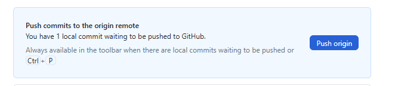

Quick Tutorial for Publishing Your "Tutorial"
üìã Overview
This tutorial guides you to publish your game reports on GitHub Pages in 4 main steps:
- Prepare your Markdown files
- Create your GitHub fork
- Add your files
- Contribute to the main project
STEP 1: Prepare Markdown Files
1.1 Create your .md files
- Prepare your files in
.md (Markdown) format
- Check online tutorials or use converters
- Naming: Use names without spaces (use
- or _)
- Images: Avoid uppercase extensions
1.2 Add the mandatory header
⚠️ IMPORTANT: Insert this block at the beginning of each file:
---
title: "Your_Race: Runde 1"
date: 2023-10-15
---
- The date determines the display order on your page
- Use cr date
- For intro/conclusion: adjust the date for proper positioning
1.3 Formatting rules
- Line break: end with
space+space+return
- Titles: use
#, ##, ###
- Images: format

Useful resources:
STEP 2: Create your GitHub fork
2.1 Create a GitHub account
If not already done: https://github.com
2.2 Fork the repository
- Go to: https://github.com/eressea/tutorials
- Click on: "Fork" button (top right)
- Select: your personal account
- Wait for: fork creation
2.3 Configure your fork
General Configuration

Enable GitHub Pages

üí° Note: To synchronize later → "Sync fork" button
⚠️ Don't touch the gh-pages branch It serves to publish your pages.
STEP 3: Add your files
3.1 Install GitHub Desktop
Download: https://desktop.github.com/download/
3.2 First launch
- Authentication: via your browser
- Clone: select your repository
- Click: "Clone your_account/tutorials"
- Default folder:
C:\Users\<YourUserName>\Documents\GitHub\tutorials
3.3 Organize your files
- Create: a
your_race folder next to the goblins folder
- Add: your
.md files to this folder
3.4 Git Workflow
See modifications

Commit (save)
- Select: files to commit
- Write: short description of changes
- Click: "Commit * files to main"
Push (send)

Click: "Push origin" to send to GitHub
STEP 4: Contribute to the project
4.1 Verify your work
✅ Test your pages
- Go to: your site (link in Settings → GitHub Pages)
- Check: page display
- If problem: on your PC: modify → commit → push
- ⏱️ Patience: update may take time
✅ Synchronize your fork
- Check: if your fork is up to date
- If necessary: use "Sync fork"
4.2 Create a Pull Request
When everything is ready:

- Go to: "Pull Request"
- Click: "New Pull Request"
- Review: everything that will be proposed
- Comment: explain your changes
- Validate: send the request
üéâ Result
Your contribution is now in Enno's hands for validation!
üöÄ Steps Summary
| Step |
Action |
Tool |
| 1 |
Prepare .md files |
Text editor |
| 2 |
Fork + config |
GitHub web |
| 3 |
Add files |
GitHub Desktop |
| 4 |
Pull Request |
GitHub web |
üìû Need help?
- On Discord: https://discord.com/channels/509396702663278592/1404841577402077332
- GitHub documentation for Git details